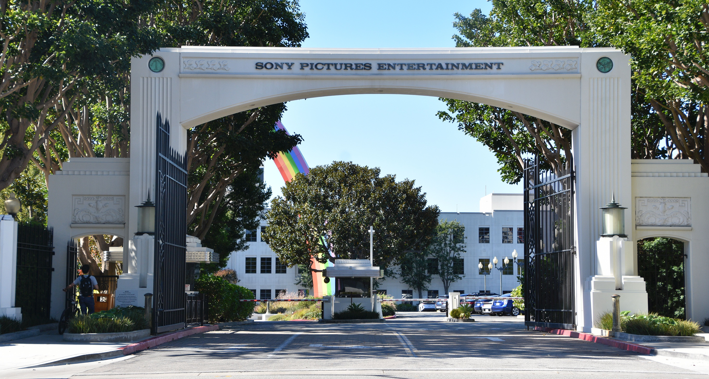

Ver más
Estudios utilizados
La película fue producida por Columbia Pictures junto a Marvel Enterprises y distribuida por Sony Pictures Releasing. El rodaje se realizó entre el 8 de enero y el 30 de junio de 2001.
Gran parte del film se grabó en Sony Pictures Studios (Culver City, California), donde se recrearon sets completos como el laboratorio de Oscorp, la habitación de Peter Parker, y la redacción del Daily Bugle.
También se utilizaron estudios como Raleigh Studios y Manhattan Beach Studios para escenas con pantalla verde y efectos complejos.